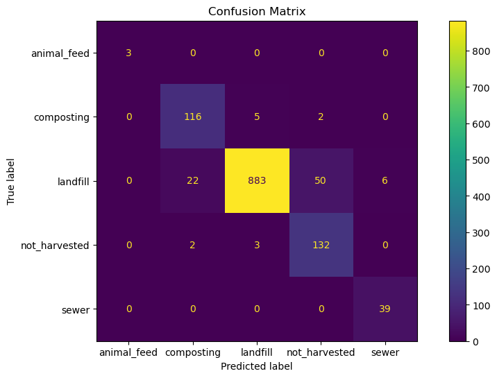
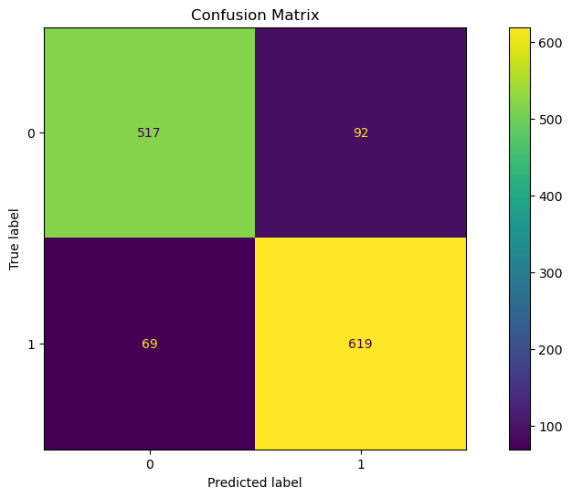
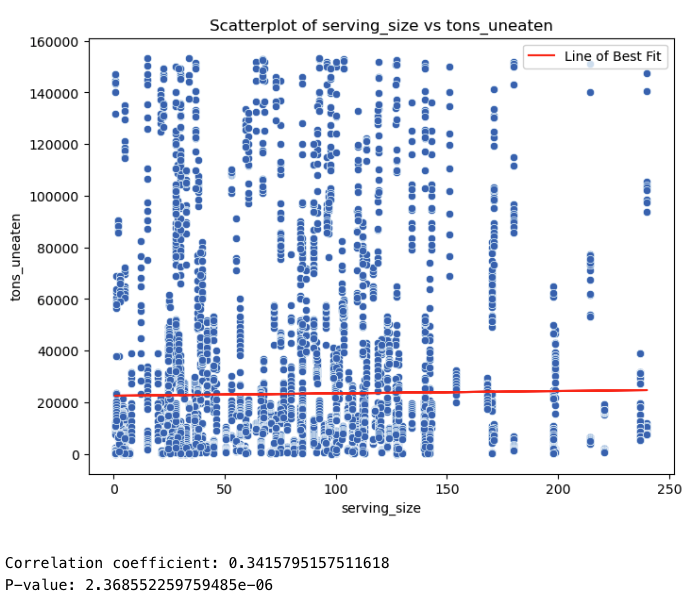
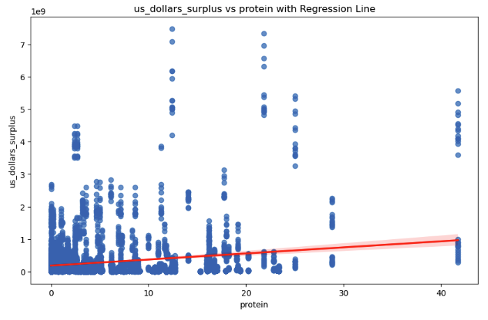
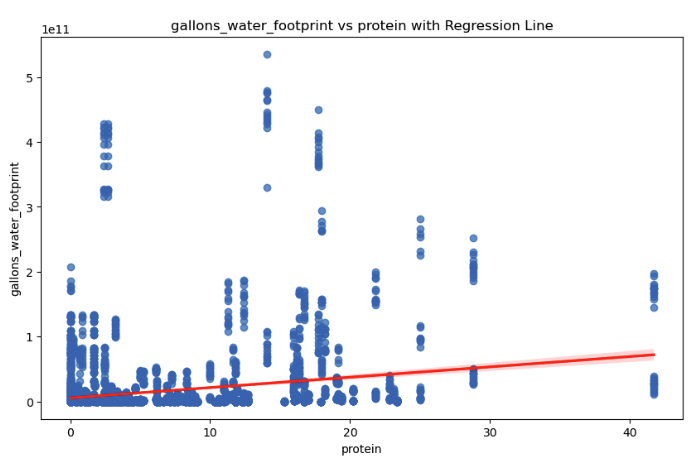
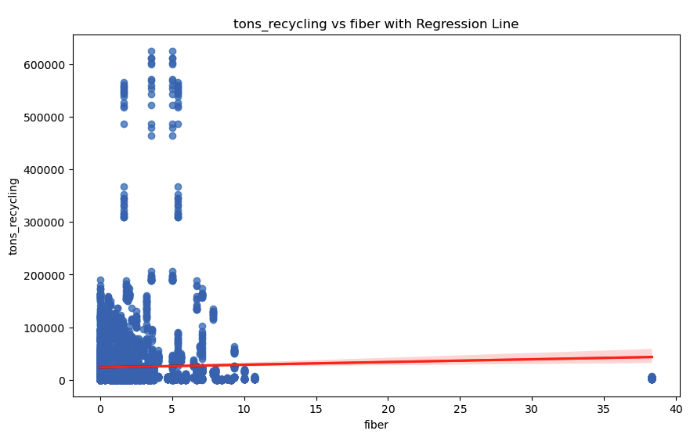
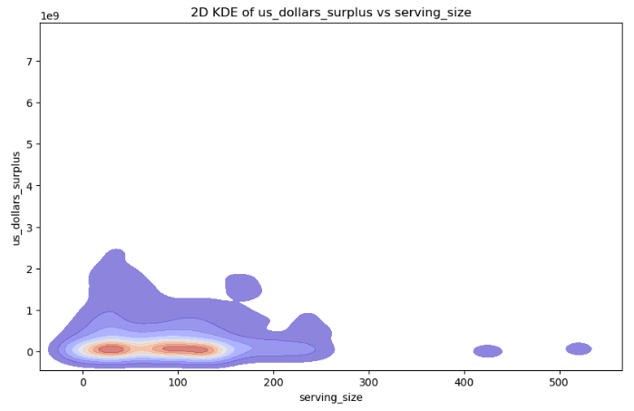

Final Report
Executive Summary
This report focuses on analyzing patterns of food waste and employs a data-driven approach to address two key objectives: reducing food wastage and minimizing surplus costs in US dollars. By leveraging insights into the macronutrient profiles of donated and recycled foods, the project aims to better understand the composition and potential uses of discarded food.
To achieve these goals, machine learning models are developed to predict the journey of food waste, providing actionable insights into its lifecycle. These models help identify opportunities to redirect surplus food toward donations or recycling pathways, rather than contributing to waste. The project also seeks to design and optimize new pipelines to mitigate food waste, transforming discarded nutrients into valuable resources that can benefit both communities and the environment.
Objective
This project seeks to analyze patterns in food waste with the goal of reducing wastage by increasing food donations and recycling opportunities. By examining food wastage trends over time, the project aims to design a nutrient reuptake pipeline, repurposing discarded nutrients for better use. Through a data-driven approach, the study investigates the journey of food waste, classifying its final destination—such as composting, animal feed, or donations—based on nutrient profiles.
Additionally, the project leverages machine learning models to predict the US Dollar surplus value using features derived from upstream processes. This predictive capability not only highlights areas of inefficiency but also provides actionable insights to reduce food production surpluses, optimize resource allocation, and align production more closely with demand, contributing to sustainability and cost reduction efforts.
Key Findings
The key findings of this study are presented below -
- Using input features such as ‘gallons_water_footprint,’ ‘serving_size,’ ‘calories,’ ‘protein,’ ‘fat,’ ‘carbs,’ ‘fiber,’ ‘calcium,’ ‘iron,’ and ‘sodium,’ our Random Forest model achieves an impressive classification accuracy of 93%. This model identifies the primary disposal method for various food items, providing actionable insights into food waste management. The high accuracy of this model offers a practical tool for consumers, helping them determine which foods are suitable for recycling as compost or animal feed. By promoting informed disposal decisions, this approach can contribute to reducing overall food waste and supporting sustainable waste management practices.

- Based on the aforementioned input features our KNN model can classify a food item as either “donatable” or not with a cross validation score of approximately 94%. Integrating this model into the existing logistics pipeline for food waste could help boost food donation efforts and spearhead more sustainable food management practices.

- Using input features such as ‘serving_size,’ ‘calories,’ ‘protein,’ ‘fat,’ ‘carbs,’ ‘fiber,’ ‘calcium,’ ‘iron,’ ‘sodium,’ and ‘food_category’ (one-hot encoded), our Random Forest model achieved an R-squared value of approximately 0.968 in predicting the US Dollar Surplus value. This high R-squared value indicates that the model can accurately explain nearly 97% of the variability in surplus spending based on these input features.
Methodology Overview
This analysis employed a combination of exploratory data analysis (EDA), normalization, and statistical modeling techniques to draw insights from the data. The following EDA techniques were used -
• The data was cleaned so that missing values were handled, and nutrient columns were standardized and converted to their appropriate units (e.g., grams or milligrams per serving), and addressing outliers.
• Visualizations were prepared to explore the relationships between the variables in the data.
Nutritional data for protein, fat, carbs, fiber, vitamins, and minerals were often expressed in inconsistent units across the dataset (e.g., grams for macronutrients and milligrams for micronutrients). Standardizing these units enabled meaningful comparisons across categories. For instance, macronutrients (protein, fat, carbs) were standardized to grams per serving.
Then, the following supervised and unsupervised learning techniques were applied to the dataset -
• Supervised Learning models like KNN, SVM and Randomforest were used for multiclass classification problems. These techniques were used to predict the primary disposal method for a certain food item and to predict whether a food item could be donated or not
• Regression models were used to explore relationships between waste generation and external factors like supply and surplus.
• Techniques like K-Means were applied to group food categories based on nutritional similarity, highlighting waste trends in nutrient-dense versus nutrient-poor foods.
These methods provided a robust framework for understanding food waste and its nutritional implications while offering actionable insights.
Visualizations
This section provides a few important data visualizations along with insights drawn from them.

The above plot helps visualize how serving sizes of food items (in grams) is positively correlated with tons of food uneaten. A major finding of this study is that smaller serving sizes can prevent food from being wasted. Furthermore, smaller serving sizes would also reduce the cost of production for companies in the long term. The food and beverage industry could use insights from this project to improve their current packaging canon to simultaneously reduce costs and avoid food wastage.

The above plot indicates that high-protein foods are associated with higher USD surplus values. This insight could be valuable in educating individuals and families about food consumption habits and patterns. Foods with high protein content disproportionately contribute to higher USD surplus values, highlighting their significant role in food waste and surplus production.
To mitigate this, consumers can be encouraged to plan their purchases more efficiently, avoiding over-purchasing high-protein foods that are more likely to go unused. Additionally, this finding highlights the importance of targeted interventions in food donation drives or recycling programs, focusing on redistributing surplus high-protein foods to areas where they can be utilized, such as food banks or animal feed initiatives. By addressing the surplus generation of such nutrient-dense foods, efforts to reduce food waste can become more impactful and sustainable.

The above plot demonstrates that foods with higher protein content (measured in grams) require significantly more gallons of water during upstream processing. This trend is likely attributable to high-protein foods such as beef, poultry, and dairy, which have a substantial environmental footprint due to intensive resource requirements in their production processes.
This finding emphasizes the need for promoting more sustainable dietary choices. Reducing the consumption of resource-intensive, high-protein foods which can help minimize water usage and decrease the overall environmental impact of food production. Public awareness campaigns and policy interventions could encourage shifts toward plant-based proteins and other sustainable alternatives, fostering a more environmentally conscious approach to food consumption.

The above plot illustrates that foods with a high fiber content, often less processed and more natural, are frequently recyclable and repurposable. This finding highlights the sustainability of consuming such foods, as they are less likely to contribute to waste and can instead serve as valuable inputs for recycling initiatives, such as composting or creating animal feed.
Encouraging the consumption of high-fiber foods not only promotes healthier dietary habits but also aligns with sustainable food systems by reducing landfill contributions and supporting nutrient cycling. Public awareness campaigns and educational initiatives could emphasize the dual benefits of high-fiber foods—both for individual health and for reducing the environmental impact of food waste

The above Kernel Density Plot highlights that foods with serving sizes between 30-80 grams or 150-200 grams contribute significantly to higher USD surplus values, indicating that these portions are more prone to being wasted. This insight underscores the importance of rethinking packaging strategies for these specific serving sizes.
Adjusting packaging to better match consumption patterns—such as offering smaller, customizable portions or resealable options—could help mitigate waste. By aligning serving sizes more closely with consumer needs, the food industry can reduce excess production and waste, ultimately leading to both economic and environmental benefits.
Implications
The implications of the finding from this report can be found below.
- Anticipating Excess Production Costs:
The models presented here, provide the food and beverage industry with a predictive tool to estimate surplus spending. By identifying patterns linked to food overproduction, food and beverage businesses can better plan production quantities, aligning supply more closely with demand.
- Reducing Food Waste at the Source:
By forecasting surplus values, companies and individual consumers can take preemptive measures to reduce production of items prone to excessive waste. This can lead to a significant reduction in food surpluses, contributing to more sustainable food systems.
- Cost Optimization:
Manufacturers and suppliers can leverage these predictions to reduce operational costs associated with surplus management, such as storage, distribution, or disposal expenses. This ultimately enhances profitability and operational efficiency.
- Support for Sustainability Goals:
With actionable insights from the model, the food industry can make more environmentally responsible decisions by minimizing its water footprint stemming from surplus production and waste.
Recommendations
Here are some of the recommendations from this study -
Optimize food packaging - The packaging for foods with a serving size between 30-80 grams or 150-200 grams must be redesigned because they currently contribute disproportionately to USD surplus values. Resealable and portion-controlled packaging can help reduce waste from food.
Support for Recycling and Food Donation Infrastructure - Policy makers should invest in infrastructure for food recycling such as anaerobic digestion farms or composting units. Furthermore, there should be tax benefits for donating surplus food and a wider encouragement for food recovery iniatives.
Utilizing Leftovers and Expired Foods - Individuals can incorporate leftover ingredients creatively to reduce waste and maximize food utilization.
Embracing High-Fiber Foods - Individual consumers should consider consuming foods with a high fiber content. Food waste which comes from fiber-rich foods should be composted and/or recycled.
Further Investigation into Nutrient Reuptake Systems - While this is a promising study, further research is required into the nutrient needs of different organisms so that discarded nutrients can be used not just for animal feed and anaerobic digestion but also for nutrition for other organisms.
Conclusion
In conclusion, this study is a promising step toward understanding and mitigating food waste by leveraging data-driven insights. Through the analysis of nutrient profiles and waste patterns, we have identified the factors that contribute to food surpluses and waste, such as serving size, protein content, and water footprint. The use of machine learning models has shown potential for predicting surplus values and identifying opportunities for food donations, recycling or USD surpluses, thereby helping reduce food waste, environmental impact, and costs of production for the food and beverage industry. The recommendations provided here can guide the food and beverage industry, policymakers, and consumers toward more sustainable practices, ultimately contributing to a more efficient and less wasteful food and nutrient reuptake system. Further research and continuous improvements in data collection and model accuracy will be essential to fully optimize these strategies for wider adoption.